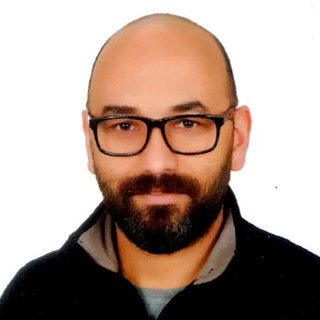
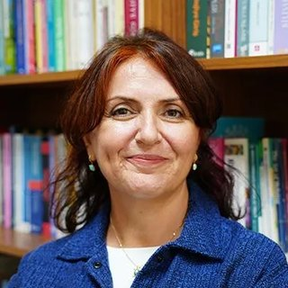
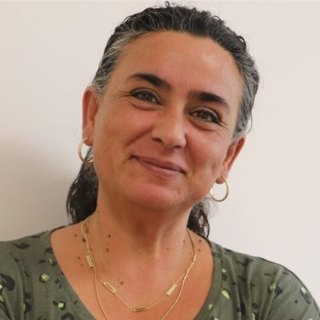

Yüz yüze grup oturumları
Psikolojik danışmanlık ve rehberlik alanında uzman iki grup lideri eşliğinde, yapılandırılmış etkinliklerle yürütülen haftalık oturumlar.
- 12hafta
- 2grup
- 16katılımcı her grupta
Pozitif Karakter Psikoeğitim Programı
POZKAP, üniversite öğrencilerinin uyumunu ve iyi oluşunu karakter güçleri üzerinden desteklemek için geliştirilen bir psikoeğitim programıdır. Program yüz yüze grup oturumlarıyla ve çevrimiçi kendi kendine yardım platformuyla uygulanacak, iki biçimin etkililiği bilimsel olarak değerlendirilecektir.
Bir erdem seçin ya da bir dilimi inceleyin
Katılım çağrıları, etkinlikler, yayınlar ve projeden haberler burada paylaşılır.
Geleneksel uyum programları çoğunlukla sorunları azaltmaya ve bilgi vermeye odaklanır. POZKAP ise öğrencinin güçlü yönlerini keşfetmesini ve bunları üniversite yaşamında kullanmasını hedefler.
Psikolojik danışmanlık ve rehberlik alanında uzman iki grup lideri eşliğinde, yapılandırılmış etkinliklerle yürütülen haftalık oturumlar.
Öğrencinin kendi hızında ilerlediği web tabanlı platform. Ön değerlendirmeyle kişiselleştirilen içerik, haftalık görevler, kaynak kütüphanesi ve moderasyonlu bir paylaşım alanı içerir.
Program üç çerçeveye dayanır. Karakter güçleri programın aracıdır; PERMA iyi oluşu, uyum modeli ise üniversite yaşamının boyutlarını tanımlar.
Programın aracı
Peterson ve Seligman, 2004
Olumlu özellikleri altı erdem altında toplanan 24 güçle tanımlar.
İyi oluşun tanımı
Seligman, 2011
İyi oluşu beş boyutta ele alır.
Uyumun boyutları
Baker ve Siryk
Üniversite yaşamına uyumu dört boyutta inceler.
Proje beş iş paketinden oluşur. Her aşamanın bulguları bir sonrakine yön verir.
Öğrencilerle bireysel görüşmeler ve görüşme bulgularına dayanan geniş katılımlı bir anket.
ÇIKTIÖğrencilerin öncelikli ihtiyaçları
Program ve öğrenme çıktıları, 12 oturumluk etkinlik ve materyaller, uzman görüşü.
ÇIKTIUygulayıcı kılavuzu ve oturum materyalleri
Mobil uyumlu, modüler ve kişisel verileri koruyan kendi kendine yardım platformu.
ÇIKTIÇevrimiçi kendi kendine yardım platformu
Pilot çalışma ve revizyonun ardından kontrol gruplu deneysel uygulama.
ÇIKTIÖn test, son test ve izleme verileri
Nicel ve nitel bulguların bütünleştirilmesi, kitapçık, uygulayıcı eğitimi ve platformun herkese açılması.
ÇIKTIBilgilendirme kitapçığı, bildiriler ve makaleler
Psikolojik danışmanlık ve rehberlik, eğitim programları ve öğretim, öğretim teknolojileri alanlarından araştırmacılar.





